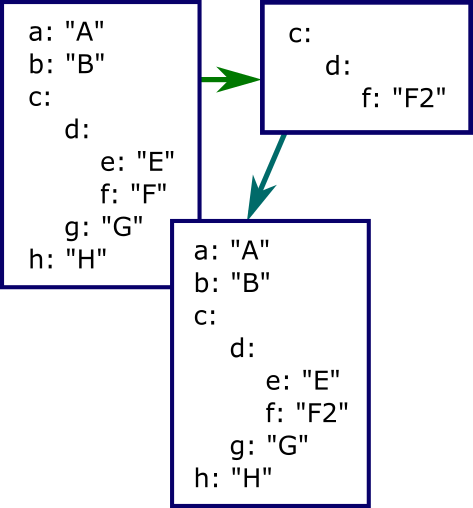

- Introduction
- Use Case
- Deep Cloning
- The Solution
- The Usage
- What if the Object Graph is not a Tree?
- Conclusion
1 Introduction
This short article is written to continue my previous article on the named arguments topic, to look at the problem from a very different point of view. Let's come back to the very basic and well-known idea I described in the section 2. Some Good Ideas: passing an object. I described the problems of this approach and suggested one alternative.
Since this point, let's make it clear: in JavaScript, there are no such mechanism as passing function arguments by name, we can only devise some mechanisms serving as syntactic sugar aimed to reach some of the goals of by-name passing; the formal JavaScript mechanism of passing arguments is either not used at all, as in my previous article, or the arguments are passed by position. In this article, I will focus only on one argument, an actual JavaScript function positional argument, which is a structured object. It's property takes the load of the argument's semantic.
If we think at why such mechanism is used, we can notice that the correspondence by name gives us loose coupling between actual and formal arguments: the properties can come in any order and be missing. So, the biggest point here is using the missing arguments, or the problem of default values. It's interesting to note that the case of non-object properties (strings, numbers, null and undefined) the problem of defaults looks quite trivial: the missing properties are passed as undefined. This can be checked up in the implementation of the function. This is not trivial if one or more properties are also of the object type. Then we can get a hierarchy of arbitrary depth of nesting; a less trivial fact is that it's possible to build object graph of general topology, not just a tree.
To get the feel of the problem, it will probably be the best to consider some use case.
2 Use Case
Let's say, we develop some UI component to be used in a Web or just browser-based application. When we start development, we define some reasonable set of UI styles and other properties, to make it reasonably good looking, keeping in mind that later on this set can be customized by the user. This is some representative example:
function createControl() {
var defaultOptionSet = {
behavior: {
selectable: true,
editable: true,
shiftEditPosition: false,
RTL: false
},
colors: {
activeCell: { foreground: "Yellow", background: "Navy"},
inactiveCell: { foreground: "Black", background: "Silver"},
unselectedCell: { foreground: "Black", background: "White"}
},
styles: {
cell: "border: solid thin black",
table: "border-spacing: 0; padding: 0; outline-offset: -4px",
superscript: "font-size:70%"
}
};
var options = defaultOptionSet;
}
Look at the code sample "demoA-structured-option-set.html".
Naturally, we plan on passing options as an argument supplied by the user. Then we will remove the line "var option = …", as it will be supplied by the user. But what to do with defaultOptionSet. We don't want to assign it to options, because the user wants to change some options, but we don't want to remove it at all, because, in this case, how the user will know what properties to supply? By scanning the implementation code? Or should we just leave defaultOptionSet in a commented-out form, to give the user some kind of documentation. Silly, isn't it?
But better let's admit that we are facing a real problem, not an accidental-complexity problem. What we really want is this: we want to use both. Roughly speaking, we want to deep-clone defaultOptionSet to options, but in some special way: we expect some properties of options to be preserved. Which ones? The question seems trivial at first, but it's not so easy to formulate what it should be. The name of such property should match some property in defaultOptionSet, but not every one of them. The same property name can occur more than once, in different positions in the structure. But what does it mean, "same position"? And so on… Say, we can define the following option value:
{ colors: { activeCell: { foreground: "LightGoldenRodYellow" } } }
Look at the defaultOptionSet structure. Isn't it obvious that the property with the value "Yellow" should change this value to "LightGoldenRodYellow"; and all other properties should be the same as the deep clone of defaultOptionSet would have? This is something we are really looking for. Take a look at the picture on top of the present article — is should give a pretty good idea.
Anyway, after some thinking, it becomes obvious that this is not cloning. Some more thinking can lead to the conclusion that it is not merge. However…
3 Deep Cloning
Actually, the present section is a side dish, a short discussion of deep cloning in JavaScript. Out of curiosity, I decided to take a look, what developers suggest to do when they need deep cloning. I was really surprised. I found several code samples where the properties are hierarchically created in a target objects, recursively, of course. At least one article suggested a wonderful thing: to serialize an object using AJAX and then deserialize it to a brand-new object; of course, it should work. Another approach is using eval. Well, developer's fantasy is unlimited.
At the same time, it's quite easy to find out that deep cloning of an object is as easy as this:
var clone = Object.create(sourceObject);
Please see https://developer.mozilla.org/en-US/docs/Web/JavaScript/Reference/Global_Objects/Object/create
Good to know, isn't it? :-)
4 The Solution
This is the complete solution:
var constants = { objectType: typeof {} };
function populateWithDefault(value, defaultValue) {
if (!defaultValue) return;
if (!value) return;
if (typeof defaultValue == constants.objectType && typeof value == constants.objectType) {
for (var index in defaultValue)
if (!(index in value))
value[index] = defaultValue[index];
else
populateWithDefault(value[index], defaultValue[index]);
} else
value = defaultValue;
}
Note that the roles of value and defaultValue are not symmetrical. This is not merge and not cloning. The target object is value; defaultValue remains unmodified, but this fact is not principal. The key to understanding it is this: if some property in the tree structure of value is not undefined, it is preserved, no matter where in the structure it is located, it's only important that this value is never overridden with any data taken from defaultValue. If you think about it, you will see: this is what we really need.
5 The Usage
Let's see how it works on other working samples. First of all, in the section 4. Testing Code Samples on JavaScript Playground of my previous article, I explain how I use micro platform for JavaScript execution, development and demonstration of operation on code samples.
The code sample "demoB-structured-argument.html" demonstrates the usage on the object value which is configured to modify only one of the color properties (foreground) on third level of the hierarchy. The dump of both objects after population is shown.
The code sample "demoB-structured-argument.html" demonstrates that null properties are very different from undefined. Null will be really treated as any other defined property, that is, it will be preserved, not overridden with homological value taken from defaultValue.
If our value is { colors: null }, the resulting property colors becomes null.
6 What if the Object Graph is not a Tree?
Quick answer: not a problem!
I mentioned in my Introduction section that it's possible to create an object graph, which is not a tree. By definition, a tree is a graph without loops. In other words, this is an hierarchy of objects. We can break a hierarchy by adding additional reference which can form a loop. It's not a very obvious thing, so I'll explain it on some simple example how to make such thin in JavaScript, based on the structure from our use case (some properties are omitted):
var defaultOptionSet = {
behavior: { },
colors: { },
badProperty: undefined
};
defaultOptionSet.badProperty = defaultOptionSet.colors;
Due to some very reasonable JavaScript syntactic limitations, it's only possible to produce in two steps, so there are two statements in the code sample shown above. Such structures are pretty dangerous in careless or inexperienced hands. They are notoriously easily breaks execution of recursive code. Of course, such problem can be and should be resolved. For one example, take a look at the JavaScript file of JavaScript Playground provided with the demo code. Locate the code of Object.prototype.dump and a local object recursionBreaker. As the name suggests, it helps to break "infinite" recursion. I think you can get an idea by looking at this function. But what's up with populateWithDefault?
Let's take some risk and execute our recursive code:
var value = { };
populateWithDefault(value, defaultOptionSet);
For simplicity, I started with an empty project, which of course should produce a deep clone of defaultOptionSet. Will it slip into infinite recursion? Surprisingly, not. Why? It does not happen due to the check !(index in value), exact same check which helps to preserve existing properties of target value.
Please see the code sample "demoD-not-a-tree-object-graph.html".
7 Conclusion
I had some time to come to the conclusion, based on several projects, that the simple technique I described can play really important role. Not only it provides customization of options and other data passed to functions, it also suggests a very naturally structured workflow of project development.